网络分层模型
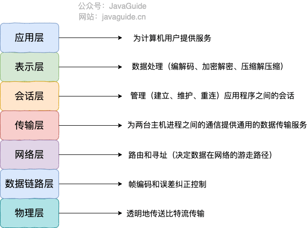
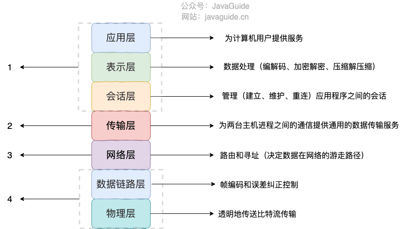
TCP/IP 四层模型 是目前被广泛采用的一种模型,我们可以将 TCP / IP 模型看作是 OSI 七层模型的精简版本，由以下 4 层组成：
- 应用层
- 传输层
- 网络层
- 网络接口层
应用层位于传输层之上，主要提供两个终端设备上的应用程序之间信息交换的服务，它定义了信息交换的格式，消息会交给下一层传输层来传输。 我们把应用层交互的数据单元称为报文。
应用层协议定义了网络通信规则，对于不同的网络应用需要不同的应用层协议。在互联网中应用层协议很多，如支持 Web 应用的 HTTP 协议，支持电子邮件的 SMTP 协议等等。
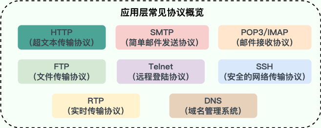
**传输层（Transport layer）**传输层的主要任务就是负责向两台终端设备进程之间的通信提供通用的数据传输服务。 应用进程利用该服务传送应用层报文。“通用的”是指并不针对某一个特定的网络应用，而是多种应用可以使用同一个运输层服务。传输层常见协议：
- TCP（Transmission Control Protocol，传输控制协议 ）：提供 面向连接 的，可靠 的数据传输服务。
- UDP（User Datagram Protocol，用户数据协议）：提供 无连接 的，尽最大努力 的数据传输服务（不保证数据传输的可靠性），简单高效。
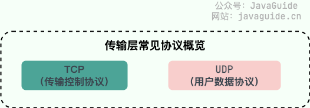
网络层负责为分组交换网上的不同主机提供通信服务。 在发送数据时，网络层把运输层产生的报文段或用户数据报封装成分组和包进行传送。在 TCP/IP 体系结构中，由于网络层使用 IP 协议，因此分组也叫 IP 数据报，简称数据报。
网络层的还有一个任务就是选择合适的路由，使源主机运输层所传下来的分组，能通过网络层中的路由器找到目的主机。
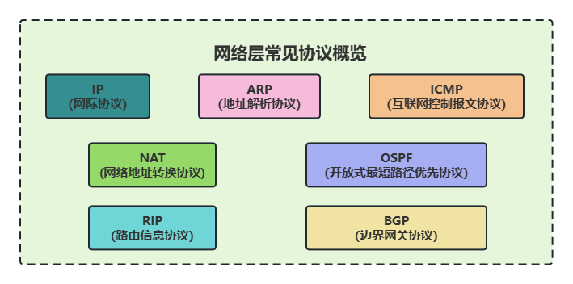
IP（Internet Protocol，网际协议）：TCP/IP 协议中最重要的协议之一，主要作用是定义数据包的格式、对数据包进行路由和寻址，以便它们可以跨网络传播并到达正确的目的地。目前 IP 协议主要分为两种，一种是过去的 IPv4，另一种是较新的 IPv6，目前这两种协议都在使用，但后者已经被提议来取代前者。
ARP（Address Resolution Protocol，地址解析协议）：ARP 协议解决的是网络层地址和链路层地址之间的转换问题。因为一个 IP 数据报在物理上传输的过程中，总是需要知道下一跳（物理上的下一个目的地）该去往何处，但 IP 地址属于逻辑地址，而 MAC 地址才是物理地址，ARP 协议解决了 IP 地址转 MAC 地址的一些问题。
ICMP（Internet Control Message Protocol，互联网控制报文协议）：一种用于传输网络状态和错误消息的协议，常用于网络诊断和故障排除。例如，Ping 工具就使用了 ICMP 协议来测试网络连通性。
NAT（Network Address Translation，网络地址转换协议）：NAT 协议的应用场景如同它的名称——网络地址转换，应用于内部网到外部网的地址转换过程中。具体地说，在一个小的子网（局域网，LAN）内，各主机使用的是同一个 LAN 下的 IP 地址，但在该 LAN 以外，在广域网（WAN）中，需要一个统一的 IP 地址来标识该 LAN 在整个 Internet 上的位置。
OSPF（Open Shortest Path First，开放式最短路径优先） ）：一种内部网关协议（Interior Gateway Protocol，IGP），也是广泛使用的一种动态路由协议，基于链路状态算法，考虑了链路的带宽、延迟等因素来选择最佳路径。
RIP(Routing Information Protocol，路由信息协议）：一种内部网关协议（Interior Gateway Protocol，IGP），也是一种动态路由协议，基于距离向量算法，使用固定的跳数作为度量标准，选择跳数最少的路径作为最佳路径。
BGP（Border Gateway Protocol，边界网关协议）：一种用来在路由选择域之间交换网络层可达性信息（Network Layer Reachability Information，NLRI）的路由选择协议，具有高度的灵活性和可扩展性。
网络接口层（Network interface layer），把网络接口层看作是数据链路层和物理层的合体
**数据链路层(data link layer)**通常简称为链路层（ 两台主机之间的数据传输，总是在一段一段的链路上传送的）。数据链路层的作用是将网络层交下来的 IP 数据报组装成帧，在两个相邻节点间的链路上传送帧。每一帧包括数据和必要的控制信息（如同步信息，地址信息，差错控制等）。
物理层的作用是实现相邻计算机节点之间比特流的透明传送，尽可能屏蔽掉具体传输介质和物理设备的差异
为什么网络要分层？
各层之间相互独立：各层之间相互独立，各层之间不需要关心其他层是如何实现的，只需要知道自己如何调用下层提供好的功能就可以了（可以简单理解为接口调用）。这个和我们对开发时系统进行分层是一个道理。
提高了灵活性和可替换性：每一层都可以使用最适合的技术来实现，你只需要保证你提供的功能以及暴露的接口的规则没有改变就行了。并且，每一层都可以根据需要进行修改或替换，而不会影响到整个网络的结构。这个和我们平时开发系统的时候要求的高内聚、低耦合的原则也是可以对应上的。
大问题化小：分层可以将复杂的网络问题分解为许多比较小的、界线比较清晰简单的小问题来处理和解决。这样使得复杂的计算机网络系统变得易于设计，实现和标准化。 这个和我们平时开发的时候，一般会将系统功能分解，然后将复杂的问题分解为容易理解的更小的问题是相对应的，这些较小的问题具有更好的边界（目标和接口）定义。
访问网页的全过程？
- 在浏览器中输入指定网页的 URL。
- 浏览器通过 DNS 协议，获取域名对应的 IP 地址。
- 浏览器根据 IP 地址和端口号，向目标服务器发起一个 TCP 连接请求。
- 浏览器在 TCP 连接上，向服务器发送一个 HTTP 请求报文，请求获取网页的内容。
- 服务器收到 HTTP 请求报文后，处理请求，并返回 HTTP 响应报文给浏览器。
- 浏览器收到 HTTP 响应报文后，解析响应体中的 HTML 代码，渲染网页的结构和样式，同时根据 HTML 中的其他资源的 URL（如图片、CSS、JS 等），再次发起 HTTP 请求，获取这些资源的内容，直到网页完全加载显示。
- 浏览器在不需要和服务器通信时，可以主动关闭 TCP 连接，或者等待服务器的关闭请求。
HTTP 和 HTTPS 有什么区别？（重要）
- 端口号：HTTP 默认是 80，HTTPS 默认是 443。
- URL 前缀：HTTP 的 URL 前缀是 htps://，HTTPS 的 URL 前缀是 https://。
- 安全性和资源消耗：HTTP 协议运行在 TCP 之上，所有传输的内容都是明文，客户端和服务器端都无法验证对方的身份。HTTPS 是运行在 SSL/TLS 之上的 HTTP 协议，SSL/TLS 运行在 TCP 之上。所有传输的内容都经过加密，加密采用对称加密，但对称加密的密钥用服务器方的证书进行了非对称加密。所以说，HTTP 安全性没有 HTTPS 高，但是 HTTPS 比 HTTP 耗费更多服务器资源。SEO（搜索引擎优化）：搜索引擎通常会更青睐使用 HTTPS 协议的网站，因为 HTTPS 能够提供更高的安全性和用户隐私保护。使用 HTTPS 协议的网站在搜索结果中可能会被优先显示，从而对 SEO 产生影响。
什么是 WebSocket?
WebSocket 是一种基于 TCP 连接的全双工通信协议，即客户端和服务器可以同时发送和接收数据。
WebSocket 协议在 2008 年诞生，2011 年成为国际标准，几乎所有主流较新版本的浏览器都支持该协议。不过，WebSocket 不只能在基于浏览器的应用程序中使用，很多编程语言、框架和服务器都提供了 WebSocket 支持。
WebSocket 协议本质上是应用层的协议，用于弥补 HTTP 协议在持久通信能力上的不足。客户端和服务器仅需一次握手，两者之间就直接可以创建持久性的连接，并进行双向数据传输。
下面是 WebSocket 的常见应用场景：
- 视频弹幕实时消息推送
- 实时消息推送
- 即时游戏对战
- 多用户协同编辑
- 社交聊天……
WebSocket 的工作过程是什么样的？
WebSocket 的工作过程可以分为以下几个步骤：
- 客户端向服务器发送一个 HTTP 请求，请求头中包含 Upgrade: websocket 和 Sec-WebSocket-Key 等字段，表示要求升级协议为 WebSocket；
- 服务器收到这个请求后，会进行升级协议的操作，如果支持 WebSocket，它将回复一个 HTTP 101 状态码，响应头中包含 ，Connection: Upgrade 和 Sec-WebSocket-Accept: xxx 等字段、表示成功升级到 WebSocket 协议。
- 客户端和服务器之间建立了一个 WebSocket 连接，可以进行双向的数据传输。数据以帧（frames）的形式进行传送，WebSocket 的每条消息可能会被切分成多个数据帧（最小单位）。发送端会将消息切割成多个帧发送给接收端，接收端接收消息帧，并将关联的帧重新组装成完整的消息。
- 客户端或服务器可以主动发送一个关闭帧，表示要断开连接。另一方收到后，也会回复一个关闭帧，然后双方关闭 TCP 连接。
- 另外，建立 WebSocket 连接之后，通过心跳机制来保持 WebSocket 连接的稳定性和活跃性
TCP 与 UDP 的区别（重要）
- 是否面向连接：UDP 在传送数据之前不需要先建立连接。而 TCP 提供面向连接的服务，在传送数据之前必须先建立连接，数据传送结束后要释放连接。
- 是否是可靠传输：远地主机在收到 UDP 报文后，不需要给出任何确认，并且不保证数据不丢失，不保证是否顺序到达。TCP 提供可靠的传输服务，TCP 在传递数据之前，会有三次握手来建立连接，而且在数据传递时，有确认、窗口、重传、拥塞控制机制。通过 TCP 连接传输的数据，无差错、不丢失、不重复、并且按序到达。
- 是否有状态：这个和上面的“是否可靠传输”相对应。TCP 传输是有状态的，这个有状态说的是 TCP 会去记录自己发送消息的状态比如消息是否发送了、是否被接收了等等。为此 ，TCP 需要维持复杂的连接状态表。而 UDP 是无状态服务，简单来说就是不管发出去之后的事情了。
- 传输效率：由于使用 TCP 进行传输的时候多了连接、确认、重传等机制，所以 TCP 的传输效率要比 UDP 低很多。
- 传输形式：TCP 是面向字节流的，UDP 是面向报文的。
- 首部开销：TCP 首部开销（20 ～ 60 字节）比 UDP 首部开销（8 字节）要大。
- 是否提供广播或多播服务：TCP 只支持点对点通信，UDP 支持一对一、一对多、多对一、多对多；……
| 协议 | 运行于 TCP 协议之上 | 运行于 UDP 协议之上 |
|---|---|---|
| HTTP | HTTP（HTTP/3.0 之前） | HTTP（HTTP/3.0） |
| HTTPS | 是 | |
| FTP | 是 | |
| SMTP | 是 | |
| POP3/IMAP | 是 | |
| SSH | 是 | |
| DHCP | 是 | |
| DNS | 是 |
IP 协议的作用是什么？
IP（Internet Protocol，网际协议） 是 TCP/IP 协议中最重要的协议之一，属于网络层的协议，主要作用是定义数据包的格式、对数据包进行路由和寻址，以便它们可以跨网络传播并到达正确的目的地。
什么是 IP 地址？IP 寻址如何工作？
每个连入互联网的设备或域（如计算机、服务器、路由器等）都被分配一个 IP 地址（Internet Protocol address），作为唯一标识符。
每个 IP 地址都是一个字符序列，如 192.168.1.1（IPv4）、2001:0db8:85a3:0000:0000:8a2e:0370:7334（IPv6） 。
当网络设备发送 IP 数据包时，数据包中包含了 源 IP 地址 和 目的 IP 地址 。源 IP 地址用于标识数据包的发送方设备或域，而目的 IP 地址则用于标识数据包的接收方设备或域。这类似于一封邮件中同时包含了目的地地址和回邮地址。
网络设备根据目的 IP 地址来判断数据包的目的地，并将数据包转发到正确的目的地网络或子网络，从而实现了设备间的通信。
这种基于 IP 地址的寻址方式是互联网通信的基础，它允许数据包在不同的网络之间传递，从而实现了全球范围内的网络互联互通。
IP 地址的唯一性和全局性保证了网络中的每个设备都可以通过其独特的 IP 地址进行标识和寻址。
IPv4 和 IPv6 有什么区别？
IPv4（Internet Protocol version 4） 是目前广泛使用的 IP 地址版本，其格式是四组由点分隔的数字，例如：123.89.46.72。IPv4 使用 32 位地址作为其 Internet 地址，这意味着共有约 42 亿（ 2^32）个可用 IP 地址。
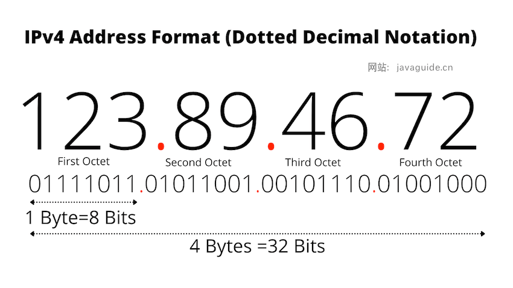
IPv6 地址使用更复杂的格式，该格式使用由单或双冒号分隔的一组数字和字母，例如：2001:0db8:85a3:0000:0000:8a2e:0370:7334 。IPv6 使用 128 位互联网地址，这意味着越有 2^128（3 开头的 39 位数字，恐怖如斯） 个可用 IP 地址。
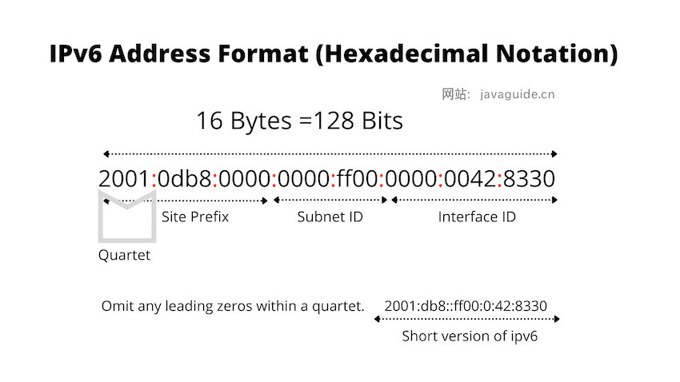
除了更大的地址空间之外，IPv6 的优势还包括：
- 无状态地址自动配置（Stateless Address Autoconfiguration，简称 SLAAC）：主机可以直接通过根据接口标识和网络前缀生成全局唯一的 IPv6 地址，而无需依赖 DHCP（Dynamic Host Configuration Protocol）服务器，简化了网络配置和管理。
- NAT（Network Address Translation，网络地址转换） 成为可选项：IPv6 地址资源充足，可以给全球每个设备一个独立的地址。
- 对标头结构进行了改进：IPv6 标头结构相较于 IPv4 更加简化和高效，减少了处理开销，提高了网络性能。
- 可选的扩展头：允许在 IPv6 标头中添加不同的扩展头（Extension Headers），用于实现不同类型的功能和选项。
- ICMPv6（Internet Control Message Protocol for IPv6）：IPv6 中的 ICMPv6 相较于 IPv4 中的 ICMP 有了一些改进，如邻居发现、路径 MTU 发现等功能的改进，从而提升了网络的可靠性和性能。……
NAT 的作用是什么？
NAT（Network Address Translation，网络地址转换） 主要用于在不同网络之间转换 IP 地址。它允许将私有 IP 地址（如在局域网中使用的 IP 地址）映射为公有 IP 地址（在互联网中使用的 IP 地址）或者反向映射，从而实现局域网内的多个设备通过单一公有 IP 地址访问互联网。NAT 不光可以缓解 IPv4 地址资源短缺的问题，还可以隐藏内部网络的实际拓扑结构，使得外部网络无法直接访问内部网络中的设备，从而提高了内部网络的安全性。
DNS 域名系统详解（应用层）
DNS（Domain Name System）域名管理系统，是当用户使用浏览器访问网址之后，使用的第一个重要协议。DNS 要解决的是域名和 IP 地址的映射问题。
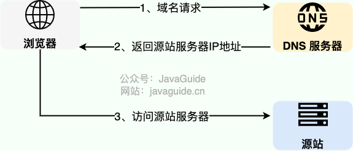
在实际使用中，有一种情况下，浏览器是可以不必动用 DNS 就可以获知域名和 IP 地址的映射的。浏览器在本地会维护一个 hosts 列表，一般来说浏览器要先查看要访问的域名是否在 hosts 列表中，如果有的话，直接提取对应的 IP 地址记录，就好了。如果本地 hosts 列表内没有域名-IP 对应记录的话，那么 DNS 就闪亮登场了。目前 DNS 的设计采用的是分布式、层次数据库结构，DNS 是应用层协议，基于 UDP 协议之上，端口为 53 。
DNS 工作流程
以下图为例，介绍 DNS 的查询解析过程。DNS 的查询解析过程分为两种模式：迭代、递归
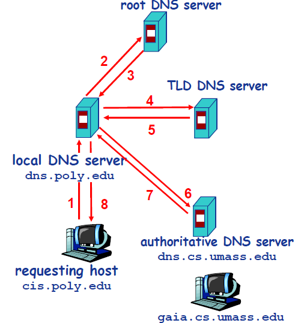
TCP 三次握手和四次挥手（传输层）
建立连接-TCP 三次握手
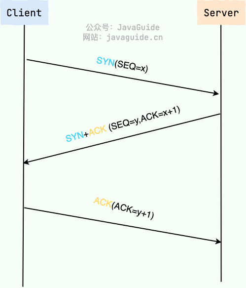
建立一个 TCP 连接需要“三次握手”，缺一不可：
- 一次握手:客户端发送带有 SYN（SEQ=x） 标志的数据包 -> 服务端，然后客户端进入 SYN_SEND 状态，等待服务端的确认；
- 二次握手:服务端发送带有 SYN+ACK(SEQ=y,ACK=x+1) 标志的数据包 –> 客户端,然后服务端进入 SYN_RECV 状态；
- 三次握手:客户端发送带有 ACK(ACK=y+1) 标志的数据包 –> 服务端，然后客户端和服务端都进入 ESTABLISHED 状态，完成 TCP 三次握手。
当建立了 3 次握手之后，客户端和服务端就可以传输数据啦！
什么是半连接队列和全连接队列？
在 TCP 三次握手过程中，Linux 内核会维护两个队列来管理连接请求（服务端保存，客户端不维护这两个队列）：
半连接队列（也称 SYN Queue）：当服务端收到客户端的 SYN 请求时，此时双方还没有完全建立连接，它会把半连接状态的连接放在半连接队列。
全连接队列（也称 Accept Queue）：当服务端收到客户端对 ACK 响应时，意味着三次握手成功完成，服务端会将该连接从半连接队列移动到全连接队列。如果未收到客户端的 ACK 响应，会进行重传，重传的等待时间通常是指数增长的。如果重传次数超过系统规定的最大重传次数，系统将从半连接队列中删除该连接信息。
这两个队列的存在是为了处理并发连接请求，确保服务端能够有效地管理新的连接请求。另外，新的连接请求被拒绝或忽略除了和每个队列的大小限制有关系之外，还和很多其他因素有关系，这里就不详细介绍了，整体逻辑比较复杂。
为什么要三次握手?
三次握手的目的是建立可靠的通信信道，说到通讯，简单来说就是数据的发送与接收，而三次握手最主要的目的就是双方确认自己与对方的发送与接收是正常的。
第一次握手：Client 什么都不能确认；Server 确认了对方发送正常，自己接收正常
第二次握手：Client 确认了：自己发送、接收正常，对方发送、接收正常；Server 确认了：对方发送正常，自己接收正常
第三次握手：Client 确认了：自己发送、接收正常，对方发送、接收正常；Server 确认了：自己发送、接收正常，对方发送、接收正常
三次握手就能确认双方收发功能都正常，缺一不可。
断开连接-TCP 四次挥手
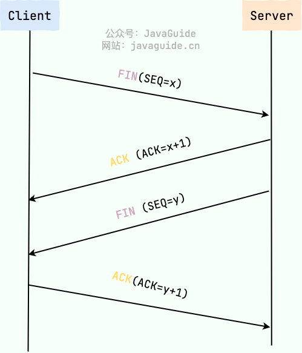
断开一个 TCP 连接则需要“四次挥手”，缺一不可：
第一次挥手：客户端发送一个 FIN（SEQ=x） 标志的数据包->服务端，用来关闭客户端到服务端的数据传送。然后客户端进入 FIN-WAIT-1 状态。
第二次挥手：服务端收到这个 FIN（SEQ=X） 标志的数据包，它发送一个 ACK （ACK=x+1）标志的数据包->客户端 。然后服务端进入 CLOSE-WAIT 状态，客户端进入 FIN-WAIT-2 状态。
第三次挥手：服务端发送一个 FIN (SEQ=y)标志的数据包->客户端，请求关闭连接，然后服务端进入 LAST-ACK 状态。
第四次挥手：客户端发送 ACK (ACK=y+1)标志的数据包->服务端，然后客户端进入 TIME-WAIT 状态，服务端在收到 ACK (ACK=y+1)标志的数据包后进入 CLOSE 状态。此时如果客户端等待 2MSL 后依然没有收到回复，就证明服务端已正常关闭，随后客户端也可以关闭连接了。
只要四次挥手没有结束，客户端和服务端就可以继续传输数据！
为什么要四次挥手？
TCP 是全双工通信，可以双向传输数据。任何一方都可以在数据传送结束后发出连接释放的通知，待对方确认后进入半关闭状态。当另一方也没有数据再发送的时候，则发出连接释放通知，对方确认后就完全关闭了 TCP 连接。
举个例子：A 和 B 打电话，通话即将结束后。
第一次挥手：A 说“我没啥要说的了”
第二次挥手：B 回答“我知道了”，但是 B 可能还会有要说的话，A 不能要求 B 跟着自己的节奏结束通话
第三次挥手：于是 B 可能又巴拉巴拉说了一通，最后 B 说“我说完了”
第四次挥手：A 回答“知道了”，这样通话才算结束。
为什么不能把服务端发送的 ACK 和 FIN 合并起来，变成三次挥手？
因为服务端收到客户端断开连接的请求时，可能还有一些数据没有发完，这时先回复 ACK，表示接收到了断开连接的请求。等到数据发完之后再发 FIN，断开服务端到客户端的数据传送。
如果第二次挥手时服务端的 ACK 没有送达客户端，会怎样？
客户端没有收到 ACK 确认，会重新发送 FIN 请求。
为什么第四次挥手客户端需要等待 2*MSL（报文段最长寿命）时间后才进入 CLOSED 状态？
第四次挥手时，客户端发送给服务端的 ACK 有可能丢失，如果服务端因为某些原因而没有收到 ACK 的话，服务端就会重发 FIN，如果客户端在 2*MSL 的时间内收到了 FIN，就会重新发送 ACK 并再次等待 2MSL，防止 Server 没有收到 ACK 而不断重发 FIN。
TCP 如何保证传输的可靠性？
- 基于数据块传输：应用数据被分割成 TCP 认为最适合发送的数据块，再传输给网络层，数据块被称为报文段或段。
- 对失序数据包重新排序以及去重：TCP 为了保证不发生丢包，就给每个包一个序列号，有了序列号能够将接收到的数据根据序列号排序，并且去掉重复序列号的数据就可以实现数据包去重。
- 校验和 : TCP 将保持它首部和数据的检验和。这是一个端到端的检验和，目的是检测数据在传输过程中的任何变化。如果收到段的检验和有差错，TCP 将丢弃这个报文段和不确认收到此报文段。
- 重传机制 : 在数据包丢失或延迟的情况下，重新发送数据包，直到收到对方的确认应答（ACK）。TCP 重传机制主要有：基于计时器的重传（也就是超时重传）、快速重传（基于接收端的反馈信息来引发重传）、SACK（在快速重传的基础上，返回最近收到的报文段的序列号范围，这样客户端就知道，哪些数据包已经到达服务器了）、D-SACK（重复 SACK，在 SACK 的基础上，额外携带信息，告知发送方有哪些数据包自己重复接收了）。
- 流量控制 : TCP 连接的每一方都有固定大小的缓冲空间，TCP 的接收端只允许发送端发送接收端缓冲区能接纳的数据。当接收方来不及处理发送方的数据，能提示发送方降低发送的速率，防止包丢失。TCP 使用的流量控制协议是可变大小的滑动窗口协议（TCP 利用滑动窗口实现流量控制）。
- 拥塞控制 : 当网络拥塞时，减少数据的发送。TCP 在发送数据的时候，需要考虑两个因素：一是接收方的接收能力，二是网络的拥塞程度。接收方的接收能力由滑动窗口表示，表示接收方还有多少缓冲区可以用来接收数据。网络的拥塞程度由拥塞窗口表示，它是发送方根据网络状况自己维护的一个值，表示发送方认为可以在网络中传输的数据量。发送方发送数据的大小是滑动窗口和拥塞窗口的最小值，这样可以保证发送方既不会超过接收方的接收能力，也不会造成网络的过度拥塞。
TCP 如何实现流量控制？
TCP 利用滑动窗口实现流量控制。流量控制是为了控制发送方发送速率，保证接收方来得及接收。 接收方发送的确认报文中的窗口字段可以用来控制发送方窗口大小，从而影响发送方的发送速率。将窗口字段设置为 0，则发送方不能发送数据。
为什么需要流量控制?
这是因为双方在通信的时候，发送方的速率与接收方的速率是不一定相等，如果发送方的发送速率太快，会导致接收方处理不过来。如果接收方处理不过来的话，就只能把处理不过来的数据存在 接收缓冲区(Receiving Buffers) 里（失序的数据包也会被存放在缓存区里）。如果缓存区满了发送方还在狂发数据的话，接收方只能把收到的数据包丢掉。出现丢包问题的同时又疯狂浪费着珍贵的网络资源。因此，我们需要控制发送方的发送速率，让接收方与发送方处于一种动态平衡才好。
这里需要注意的是（常见误区）：
- 发送端不等同于客户端
- 接收端不等同于服务端
TCP 的拥塞控制是怎么实现的？
在某段时间，若对网络中某一资源的需求超过了该资源所能提供的可用部分，网络的性能就要变坏。这种情况就叫拥塞。
拥塞控制就是为了防止过多的数据注入到网络中，这样就可以使网络中的路由器或链路不致过载。
拥塞控制所要做的都有一个前提，就是网络能够承受现有的网络负荷。
拥塞控制是一个全局性的过程，涉及到所有的主机，所有的路由器，以及与降低网络传输性能有关的所有因素。相反，流量控制往往是点对点通信量的控制，是个端到端的问题。流量控制所要做到的就是抑制发送端发送数据的速率，以便使接收端来得及接收。
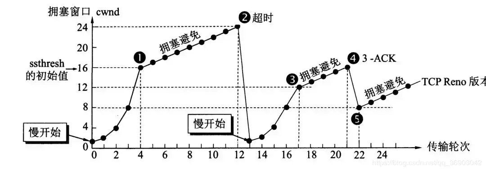
为了进行拥塞控制，TCP 发送方要维持一个 拥塞窗口(cwnd) 的状态变量。拥塞控制窗口的大小取决于网络的拥塞程度，并且动态变化。发送方让自己的发送窗口取为拥塞窗口和接收方的接受窗口中较小的一个。
TCP 的拥塞控制采用了四种算法，即 慢开始、 拥塞避免、快重传 和 快恢复。
在网络层也可以使路由器采用适当的分组丢弃策略（如主动队列管理 AQM），以减少网络拥塞的发生。
- 慢开始： 慢开始算法的思路是当主机开始发送数据时，如果立即把大量数据字节注入到网络，那么可能会引起网络阻塞，因为现在还不知道网络的符合情况。经验表明，较好的方法是先探测一下，即由小到大逐渐增大发送窗口，也就是由小到大逐渐增大拥塞窗口数值。cwnd 初始值为 1，每经过一个传播轮次，cwnd 加倍。
- 拥塞避免： 拥塞避免算法的思路是让拥塞窗口 cwnd 缓慢增大，即每经过一个往返时间 RTT 就把发送方的 cwnd 加 1.
- 快重传与快恢复： 在 TCP/IP 中，快速重传和恢复（fast retransmit and recovery，FRR）是一种拥塞控制算法，它能快速恢复丢失的数据包。没有 FRR，如果数据包丢失了，TCP 将会使用定时器来要求传输暂停。在暂停的这段时间内，没有新的或复制的数据包被发送。有了 FRR，如果接收机接收到一个不按顺序的数据段，它会立即给发送机发送一个重复确认。如果发送机接收到三个重复确认，它会假定确认件指出的数据段丢失了，并立即重传这些丢失的数据段。有了 FRR，就不会因为重传时要求的暂停被耽误。 当有单独的数据包丢失时，快速重传和恢复（FRR）能最有效地工作。当有多个数据信息包在某一段很短的时间内丢失时，它则不能很有效地工作。
If you like this blog or find it useful for you, you are welcome to comment on it. You are also welcome to share this blog, so that more people can participate in it. If the images used in the blog infringe your copyright, please contact the author to delete them. Thank you !